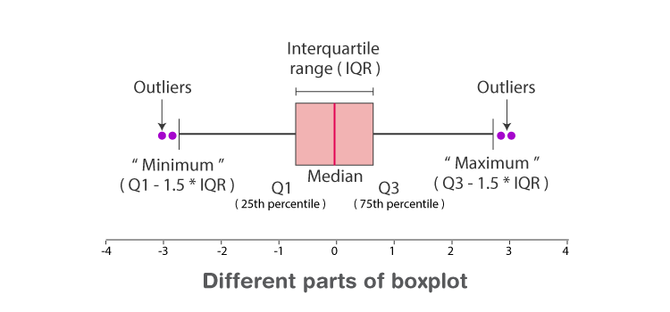
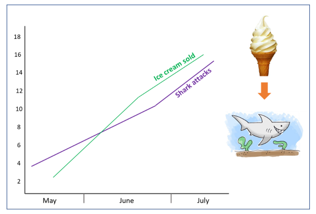
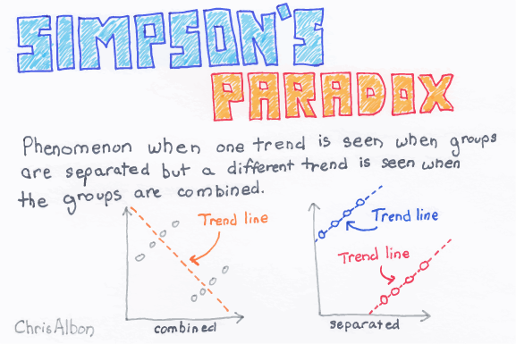

Trong quá trình phân tích dữ liệu, việc nắm vững các chỉ số thống kê cơ bản là rất quan trọng. Tuy nhiên, vấn đề còn nằm ở khả năng diễn đạt các chỉ số thống kê thành các ngôn ngữ thân thuộc trong kinh doanh. Các chỉ số thống kê mô tả cho 1 biến có tính thực tiễn cao bao gồm:
Giá trị trung bình
Giá trị trung bình sau khi loại bỏ outlier
Nhóm tứ phân vị (quartile), percentile
Trung vị (median)
Giá trị nhỏ nhất, lớn nhất
Độ lệch tiêu chuẩn (standard deviation) (ít dùng trong kinh doanh thực tiễn)
Bên cạnh đó, khi so sánh giữa 2 biến với nhau, ta cũng cần nắm vững các phương pháp sau:
So sánh 1 biến liên tục với 1 biến rời rạc - Phương pháp phân tích phương sai - ANOVA
So sánh 2 biến liên tục - Đánh giá hệ số tương quan - correlation
So sánh 2 biến rời rạc - Phương pháp đánh giá chỉ số khi-bình phương - Chi-Square & prop.test
Lưu ý với nghịch lý Simpson (Simpson paradox)
Lưu ý
Đây là chương rất quan trọng và tổng hợp phần lớn các kỹ thuật thống kê thường dùng khi phân tích dữ liệu thực tế. Thành thạo ứng dụng các kỹ thuật này có thể giúp phân tích và tìm kiếm insight nhanh chóng với khoảng 80%-85% các bài toán phân tích ứng dụng thực tế.
8.1 Các chỉ số thống kê cơ bản
Giả sử ta có 1 tập hơn 1000 khách hàng với thu nhập như sau.
library(tidyverse)set.seed(1)income <-c(floor(runif(995, 6, 30)), 1000, 2000, 3000, 5000)income %>% head
[1] 12 14 19 27 10 27
# Tổng hợp các chỉ số cơ bảnincome %>% summary
Min. 1st Qu. Median Mean 3rd Qu. Max.
6.00 12.00 17.00 28.45 24.00 5000.00
Min: giá trị nhỏ nhất - thu nhập thấp nhất của khách hàng là 6
Max: giá trị lớn nhất - khách hàng có thu nhập cao nhất là 1 tỷ 5000
First quantile: quantile 25%
Cách 1: Tứ phân vị thứ nhất là 12 triệu
Cách 2: Có 25% khách hàng có thu nhập nhỏ hơn hoặc bằng 12 triệu hoặc
Cách 3: Có 75% khách hàng có thu nhập lớn hơn hoặc bằng 12 triệu hoặc
Cách 4: Cứ 4 khách hàng thì có 1 khách hàng có thu nhập nhỏ hơn hoặc bằng 12 triệu
Median: giá trị trung vị - quantile 50%
Cách 1: Trung vị có giá trị 17 triệu
Cách 2: 50% khách hàng có thu nhập nhỏ hơn hoặc bằng 17 triệu
Cách 3: Có 50% khách hàng có thu nhập lớn hơn hoặc bằng 17 triệu hoặc
Cách 4: Cứ 2 khách hàng thì có 1 khách hàng có thu nhập lớn hơn hoặc bằng 17 triệu
Third quantile: quantile 75% - tứ phân vị thứ 3 - 24 triệu
Mean: giá trị trung bình - thu nhập trung bình của khách hàng là 28.4474474 triệu
§
Để trực quan hóa các chỉ số thống kê vừa đề cập, ta có thể sử dụng biểu đồ boxplot. Biểu đồ boxplot thể hiện các thành phần như sau.

Với biểu đồ trên, ta còn thấy có 2 nhóm chỉ số bổ sung nâng cao:
IQR: Inter Quaritle Range - là độ rộng của boxplot, là Q3-Q1
IQR(income)
[1] 12
Outlier: Là các quan sát có giá trị quá cao hoặc quá thấp. Về mặt thống kê, các outlier được định nghĩa là các giá trị nằm ngoài khoảng \((\text{Q}_1 - 1.5\times \text{IQR}, \text{Q}_3 + 1.5\times \text{IQR})\)
§
Bên cạnh đó, do việc xuất hiện các quan sát ngoại lại (outlier) là thường xuyên và có thể gây méo các chỉ số, ta cần quan tâm thêm 2 chỉ số sau
Giá trị trung bình loại bỏ outlier
Các percentile - các mốc phân vị từ 1%-100%
# Mean loại bỏ 5% đầu và 5% cuốimean(income, trim =0.05)
[1] 17.54606
# Mean không loại outliermean(income)
[1] 28.44745
# Các mốc percentilequantile(income, seq(0, 1, by =0.01))
8.2 Phân tích mối quan hệ 2 biến liên tục - correlation
Hệ số tương quan
Hệ số tương quan (correlation coefficient) là một chỉ số thống kê, được sử dụng để đo lường mối liên hệ tương quan tuyến tính giữa 2 biến định lượng hay còn gọi là biến liên tục (quantitative/continuous variables). Hay nói một cách dễ hiểu hơn, hệ số tương quan cho ta biết rằng giữa 2 biến liên tục có mối liên hệ tuyến tính nào hay không.
Thể hiện quan hệ tuyến tính giữa hai hay nhiều biến. Có giá trị nằm trong khoảng [-1,1]
Giá trị âm: Quan hệ nghịch biến
Giá trị dương: Quan hệ đồng biến
Độ mạnh yếu của hệ số tương quan được đo lường bằng giá trị tuyệt đối:
Lớn hơn 0.7: Mạnh
Từ 0.3-0.7: Trung bình
Dưới 0.3: Yếu
Tính toán correlation như sau:
# Tính correlationcor(iris$Sepal.Length, iris$Petal.Length)
[1] 0.8717538
Như vậy, tồn tại tương quan tuyến tính chặc giữa Sepal.Length và Petal.Length
Hệ số tương quan chỉ mô tả mối quan hệ đồng biến hoặc nghịch biến giữa hai biến liên tục mà không phản ánh quan hệ phi tuyến tính giữa 2 biến
Hệ số tương quan không phản ánh được mối quan hệ nhân quả, hai biến có hệ số tương quan cao không có nghĩa là biến này gây ảnh hưởng đến biến kia (correlation vs causiality)
Hai biến có hệ số tương quan rất cao nhưng hoàn toàn không có quan hệ trong thực tế

8.3 ANOVA
ANOVA viết tắt của từ analysis of variance, tức phân tích phương sai. Phương pháp ANOVA được sử dụng khi chúng ta muốn so sánh giữa 2 hoặc nhiều nhóm đối tượng khác nhau dựa vào 1 tiêu chí nhất định nào đó, ví dụ như so sánh độ tuổi của nhóm khách hàng thường và khách VIP, hay so sánh thu nhập của nhóm khách hàng nam và khách hàng nữ… Để giải thích một cách dễ hiểu hơn, chúng ta sẽ làm ví dụ sau.
Chúng ta sẽ vẽ biểu đồ boxplot so sánh Sepal.Length giữa các loài hoa (Species).
library(ggplot2)iris %>%ggplot(aes(Species, Sepal.Length, fill = Species)) +geom_boxplot() +labs(title ="Overview of Iris Sepal Length by Species", x ="Species", y ="Sepal Length (cm)") +scale_y_continuous(breaks =seq(0,10, by =0.5)) +theme_bw() +# Background đen trắngtheme(legend.position ="none") # Bỏ legend
Kiểm định ANOVA sẽ giúp chung ta so sánh chiều dài đài hoa trung bình giữa các loài hoa, sau đó tính toán chênh lệch chiều dài đài hoa trung bình giữa các loài hoa, và cuối cùng sẽ kiểm định xem những sự chênh lệch đó thực sự có ý nghĩa về mặt thống kê hay không. Hay nói cách khác, phương pháp ANOVA kiểm định cặp giả thuyết sau:
\(H_0\): Không có sự khác biệt giữa chiều dài đài hoa của các loài hoa (tức chênh lệch chiều dài đài hoa trung bình = 0)
\(H_1\): Có sự khác biệt giữa chiều dài đài hoa của các loài hoa (chênh lệch chiều dài đài hoa trung bình khác 0)
#ANOVAmodel <-aov(Sepal.Length ~ Species, data = iris) model %>% summary
Df Sum Sq Mean Sq F value Pr(>F)
Species 2 63.21 31.606 119.3 <2e-16 ***
Residuals 147 38.96 0.265
---
Signif. codes: 0 '***' 0.001 '**' 0.01 '*' 0.05 '.' 0.1 ' ' 1
Kết quả trên mô hình cho thấy chỉ số p value rất nhỏ, điều này cho phép chúng ta bác bỏ \(H_0\) và chấp nhận \(H_1\), tức là có sự khác biệt của giá trị trung bình của Sepal.Length giữa các loài hoa.
Tuy nhiên, trong thực tế, câu hỏi có khác biệt hay không chưa đủ, mà ta còn phải trả lời câu hỏi: “Sự khác biệt là bao nhiêu?”
Để trả lời cho câu hỏi trên, ta có thể sử dụng kiểm định TukeyHSD để tìm ra sự khác biệt giữa các nhóm.
model %>% TukeyHSD
Tukey multiple comparisons of means
95% family-wise confidence level
Fit: aov(formula = Sepal.Length ~ Species, data = iris)
$Species
diff lwr upr p adj
versicolor-setosa 0.930 0.6862273 1.1737727 0
virginica-setosa 1.582 1.3382273 1.8257727 0
virginica-versicolor 0.652 0.4082273 0.8957727 0
Giải thích ý nghĩa của bảng kết quả:
Cột diff: chênh lệch giá trị trung bình chiều dài đài hoa giữa các loài hoa
lwr và upr: khoảng tin cậy 95% (lwr < diff < upr)
p adj: giá trị p-value, nếu p-value < 0.05 thì chúng ta đủ cơ sở để bác bỏ giả thuyết Ho, chấp nhận H1.
Với kết quả như trên, ta hiểu như sau:
Kết quả trong trường hợp này cho ta thấy thực sự có sự khác biệt giữa chiều dài đài hoa của các loài hoa (các giá trị p-value = 0).
Trung bình đài hòa của nhóm vesicolor cao hơn setosa là 0.93 (ước lượng điểm). Hoặc có thể nói đài hoa của nhóm vesicolor dài hơn setosa trong khoảng từ 0.686 đến 1.173 (từ lwr đến upr)
Lưu ý
Kỹ thuật phân tích ANOVA là kỹ thuật rất quan trọng và được phần lớn trong các bước phân tích khám phá.
Bên cạnh phân tich ANOVA về giá trị trung bình, cần lưu ý sử dụng giá trị trung bình sau khi loại bỏ outlier để bổ trợ
8.4 Kiểm định quan hệ Chi-bình phương
Một trong những câu hỏi ta thường xuyên phải giải quyết trong quá trình phân tích dữ liệu là tìm kiếm mối quan hệ giữa các biến rời rạc. Một trong những kỹ thuật phổ biến để tìm kiếm mối quan hệ này là sử dụng kiểm định Chi-square (Khi bình phương).
Để thực hiện phân tích mối quan hệ này, ta cần thực hiện ba bước:
Bước một, xây dựng bảng phân phối tần xuất hai chiều.
Bước hai, tính toán chỉ số \(\chi^2\) để kiểm định giả thuyết độc lập giữa hai biến
Bước ba, đưa ra kết luận về mối quan hệ vừa được kiểm định
Để hiểu hơn về kiểm định \(\chi^2\), ta xem xét ví dụ dưới đây.
Ví dụ: Một trang web quảng cáo muốn phân tích về mối quan hệ giữa phương thức quảng cáo và thiết bị sử dụng. Dữ liệu trong một tháng về số lượt người dùng truy cập website được thể hiện như bảng dưới đây (đơn vị nghìn user)
\(\chi^2\) thực tế được tính bằng tổng các giá trị trên \(\chi^2 = 30.96\)
Với dữ liệu trên, ta có 4 cột và 3 hàng. Như vậy, bậc tự do trong phân phôi \(\chi^2\) là \((4-1)*(3-1) = 6\). Ta có thể so sánh giá trị vừa tìm được với giá trị \(\chi^2\) tại đây. Với \(\alpha\) bằng .1 và 6 bậc tự do, giá trị của \(\chi\)2 là 10.64. Với giá trị thực tế lớn hơn giá trị lý thuyết, ta bác bỏ \(H_0\). Như vậy, về mặt thống kê, tồn tại mối quan hệ giữa phương thức marketing và thiết bị sử dụng.
Ví dụ với R
Trong thực tế, khi phân tích dữ liệu, ta có thể ra quyết định nhanh chóng về mối quan hệ giữa hai biến rời rạc thông qua p-value.
Với \(p-value = 0.002035\), ta bác bỏ \(H_0\), chấp nhận \(H_1\). Nghĩa là tồn tại mối quan hệ giữa phương thức quảng cáo và thiết bị sử dụng.
8.5 Prop test
Nếu Anova được sử dụng để đánh giá ảnh hưởng của 1 biến rời rạc lên 1 biến liên tục, prop test là một trường hợp đặc biệt của \(\chi^2\) dùng để đánh giá ảnh hưởng của 1 biến rời rạc lên phân bổ của 1 biến khác.
Ví dụ: Thử nghiệm đánh giá khả năng phản hồi của 2 thông điệp quảng cáo đến các nhóm đối tượng tương tự nhau.
Quảng cáo
Số lượt xem
Số lượt click
Tỷ lệ CR
A
1000
20
2%
B
900
16
1.8%
Để đánh giá chính xác quảng cáo A có thực sự tốt hơn B hay không, ta có test sau.
2-sample test for equality of proportions with continuity correction
data: click out of observe
X-squared = 0.034685, df = 1, p-value = 0.8523
alternative hypothesis: two.sided
95 percent confidence interval:
-0.01107361 0.01551805
sample estimates:
prop 1 prop 2
0.02000000 0.01777778
chisq.test(click, observe)
Pearson's Chi-squared test with Yates' continuity correction
data: click and observe
X-squared = 0, df = 1, p-value = 1
Trong trường hợp trên, ta không đủ kết luận rằng quảng cáo A tốt hơn quảng cáo B do \(\text{p-value}=0.8523\)
§
Lưu ý: \(\chi^2\) và prop.test đều ra cùng kết quả của \(p-value\)
x <-matrix(c(1000, 20, 900, 16), ncol =2)chisq.test(x)
Pearson's Chi-squared test with Yates' continuity correction
data: x
X-squared = 0.032264, df = 1, p-value = 0.8575
prop.test(x)
2-sample test for equality of proportions with continuity correction
data: x
X-squared = 0.032264, df = 1, p-value = 0.8575
alternative hypothesis: two.sided
95 percent confidence interval:
-0.2072561 0.1487766
sample estimates:
prop 1 prop 2
0.5263158 0.5555556
§
Lưu ý: prop.test chỉ được dùng khi đo lường tỷ lệ chuyển đổi, ảnh hưởng của các biến rời rạc (factor) lên đối tượng (discrete number). Do đó, nếu dùng prop.test để đánh giá trên biến giá trị, đặc biệt sau khi chuyển đổi đơn vị tiền tệ sẽ gây ra các nhận định sai lầm.
VD: Đánh giá về tỷ lệ bảo hiểm tái tục năm 2 nếu khách hàng buộc phải mua bảo hiểm (không phải do tự nguyện), ta có bảng sau
Tiêu chí
Bắt buộc
Không bắt buộc
Số lượng hợp đồng (A)
2000
3000
Giá trị 1 hợp đồng (B)
20 (M)
20 (M)
Tổng giá trị (C=A*B)
40 (B)
60 (B)
Giá trị huỷ năm 2 (D)
18 (B)
22 (B)
Tỷ lệ huỷ (E= D/C)
45%
36.7%
Bước tiếp theo, ta dùng prop.test để đánh giá hiệu ứng thực sự của việc bắt buộc phải mua bảo hiểm đến tỷ lệ huỷ năm 2.
2-sample test for equality of proportions with continuity correction
data: huy out of total
X-squared = 0.39062, df = 1, p-value = 0.532
alternative hypothesis: two.sided
95 percent confidence interval:
-0.1340627 0.3007294
sample estimates:
prop 1 prop 2
0.4500000 0.3666667
Kết quả cho thấy \(p-value = 0.5\), việc bắt buộc mua bảo hiểm không ảnh hưởng đến tỷ lệ huỷ năm 2!
Đây là kết quả sai lầm do bị đi nhầm vào bản chất. Do mỗi hợp đồng trị giá trung bình 20 triêu VND, kết quả đúng phải như sau.
2-sample test for equality of proportions with continuity correction
data: huy out of total
X-squared = 34.376, df = 1, p-value = 4.543e-09
alternative hypothesis: two.sided
95 percent confidence interval:
0.0551185 0.1115482
sample estimates:
prop 1 prop 2
0.4500000 0.3666667
Kết quả sau cho thấy việc bắt buộc mua bảo hiểm làm tỷ lệ huỷ năm 2 cao hơn 9% so với năm đầu.
Lưu ý
Khi dùng proportion test, cần lưu ý đến đơn vị của các chỉ số. Nếu không sẽ rất dễ mắc phải và xảy ra sai lầm khi ra quyết định.
8.6 Simpson paradox
Simpson paradox là hiện tượng xảy ra khi xu hướng/ kết luận tổng thể lại khác biệt so với khi so sánh từ nhóm riêng biệt.

§
Xem ví dụ sau - Có khảo sát nghiên cứu thị trường về tỷ lệ quan tâm đến uống trà sữa buổi trưa. Kết quả như sau
Nhóm
Nam
Tỷ lệ
Nữ
Tỷ lệ
Dưới 30 tuổi
630/900
70%
80/100
80%
Trên 30 tuổi
40/100
40%
450/900
50%
Tổng số
670/1000
67%
530/1000
53%
Khi quan sát riêng lẻ từng phân khúc, ta thấy kết quả như sau:
Với nhóm dưới 30 tuổi - Nữ quan tâm nhiều hơn nam (80% > 70%)
Với nhóm trên 30 tuổi - Nữ quan tâm nhiều hơn nam (50% > 40%)
Kết luận
Nữ quan tâm đến việc uống trà sữa nhiều hơn nam.
Tuy nhiên, khi phân tích tổng thể, kết quả ra ngược lại - nam giới lại quan tâm nhiều hơn nữ giời (67% > 53%). Hiện tượng trên gọi là Simpson paradox.
Lưu ý
Simpson paradox là phương pháp bẻ nhỏ dữ liệu và dùng phương pháp suy diễn - nếu xu hướng là đúng với tất cả tập con, sẽ đúng với tổng thể. Do đó, khi phân tích cần đặc biệt cẩn thận để tránh đi vào ngụy biện